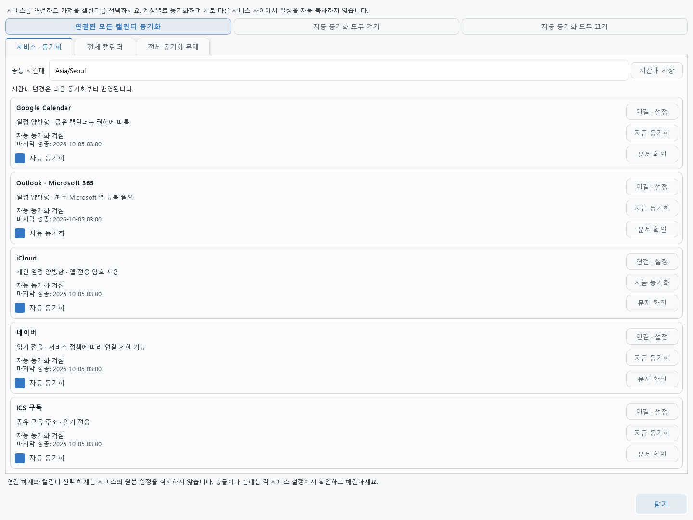

패널을 따로 옮기거나 붙이기
달력과 오늘 일정·업무 패널을 원하는 자리에 놓으세요. 자석 모드에서는 분리한 패널을 달력 창 가장자리로 가져가 한 창으로 정리할 수 있습니다.
Windows 데스크톱 캘린더
Windows 바탕화면에 달력을 띄워 원하는 곳으로 옮기세요. 오늘 일정이나 업무 패널은 따로 배치하거나 자석 모드로 한 창에 붙이고, 배경이 비치는 정도를 조절할 수 있습니다.

계정 없이 로컬로 시작19개 언어 지원
GitHub 5.2.0 공개 완료 · Store 인증 심사 중최신 GitHub 배포 보기 ↗
투명도와 커스텀 색상
달력의 배경·테두리·강조색을 각각 고르고, 배경과 테두리가 비치는 정도를 조절하세요. 라이트·다크·시스템 모드와 색상 프리셋에서 시작해 나만의 색으로 바꿀 수 있습니다.

앱의 실제 시계 위젯으로 만든 8초 GIF
배경·테두리 투명도, 강조색, 글꼴을 각각 조절
일정과 업무
바탕화면 위젯으로 오늘 일정을 확인하고, 전체 업무 관리에서 일정·일반업무·지시·협조사항을 목록으로 정리하세요.
달력과 오늘 일정·업무 패널을 원하는 자리에 놓으세요. 자석 모드에서는 분리한 패널을 달력 창 가장자리로 가져가 한 창으로 정리할 수 있습니다.
자주 쓰는 구성을 저장해 다시 불러오고, 직접 정한 시간·요일 규칙으로 자동 전환할 수 있습니다.
같은 종류의 위젯도 여러 개 만들고, 선택한 위젯은 스택으로 묶어 같은 자리에서 전환합니다.
필요할 때, 필요한 연결만
연결한 서비스의 일정을 함께 확인하고, 편집 가능한 캘린더에는 변경 내용을 동기화하세요. 연결할 서비스와 표시할 캘린더는 직접 선택합니다.

양방향 일정 · 데스크톱 OAuth 인증 파일 필요
양방향 일정 · 최초 캘린더용 Microsoft 앱 등록 필요
개인 일정 양방향 · Apple 앱 전용 암호 사용
읽기 전용 · 서비스의 CalDAV 연결 정책에 따름
읽기 전용 구독 · 공휴일과 공개 일정 피드
외부 서비스는 계정 준비와 권한이 필요하며 호환성은 서비스 정책에 따릅니다. 네이버·ICS·권한 없는 캘린더와 반복/초대 일정의 편집은 제한됩니다. 로컬 캘린더는 계정 없이 사용할 수 있습니다.
서비스별 연결 안내와 지원 범위화면으로 살펴보기
앱 화면과 예시 데이터로 렌더한 위젯을 직접 살펴보세요. 이미지를 누르면 크게 볼 수 있습니다.
CALENDAR WORKSPACE
월간 캘린더 오른쪽에 이번 주 일정, 루틴, 디렉티브가 이어집니다. 날짜를 확인한 자리에서 해야 할 일을 바로 선택할 수 있습니다.
일정을 담는 방식
날짜를 고르고, 시간을 정하고, 저장할 캘린더를 선택하세요. 월간 달력과 일정 목록이 나란히 있어 약속의 흐름과 하루의 세부 내용을 함께 볼 수 있습니다.
날짜 범위를 드래그하거나 한국어·영어 문장으로 일정을 빠르게 등록하세요.
루틴·할 일·지시·협조를 구분하고, 우선순위와 체크리스트로 실행 항목을 관리합니다.
집중 모드와 Pomodoro를 시작하고 완료한 세션과 누적 시간을 확인하세요.
설치와 데이터
일정과 설정은 로컬에 저장합니다. 외부 캘린더·날씨·ICS는 연결한 기능에 한해 해당 서비스와 통신합니다. 앱에는 개발자 분석 서버가 없습니다.
개인정보 처리 방식 자세히 보기Air Calendar는 Windows 데스크톱 환경에 맞춰 설계되었습니다. 정확한 최신 요구 사항은 Microsoft Store 제품 페이지에서 확인할 수 있습니다.
아닙니다. 로컬 캘린더만으로 사용할 수 있으며 필요한 서비스만 선택해 연결합니다. 외부 서비스는 계정과 권한이 필요합니다.
Microsoft Store에서 판매되는 유료 앱입니다. 현재 가격과 구매 조건은 Store에서 확인하세요. 소스 코드는 GPLv3 조건에 따라 공개됩니다.
시계, 스톱워치, 날짜 카드, 카운트다운, D-Day, 텍스트, 날씨, KeyDeck, 루프 믹서를 지원합니다.
기본 데이터는 로컬에 저장됩니다. Google Calendar, 날씨, ICS 등 사용자가 활성화한 외부 기능만 해당 제공자와 직접 통신합니다.
English guides for people looking for a Windows desktop calendar, Google Calendar overlay, D-Day widget, or a calendar-based Pomodoro workflow.
Plan locally on Windows and see which features need internet.
Read guide → WINDOWS DESKTOPKeep the calendar, schedules, tasks, and useful widgets visible.
Read guide → GOOGLE CALENDARConnect selected Google calendars to a customizable desktop workspace.
Read guide → COUNTDOWNKeep deadlines and important dates visible while you work.
Read guide → FOCUSMove from planning to a timed focus session without losing context.
Read guide →함께 다듬는 Air Calendar
불편했던 점, 필요한 기능, 작은 아이디어까지. 여러분의 의견을 기다립니다.
회원가입 없이 작성할 수 있어요.
등록한 내용은 공개됩니다. 개인정보·비밀번호·인증 키는 본문에 넣지 마세요.
AIR CALENDAR FOR WINDOWS
배치, 색상, 투명도와 캘린더 연결까지. 나에게 맞는 작업 공간을 만들어보세요.